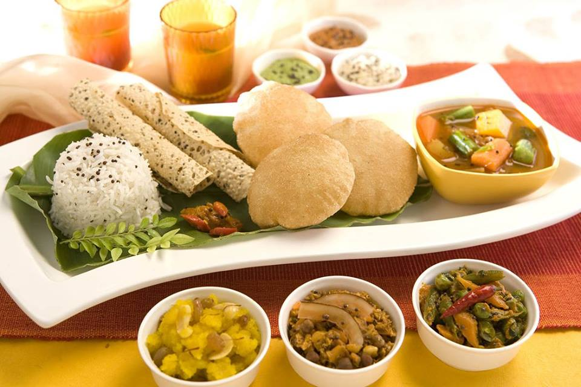

As we sweat our way into summer 2018, enjoying coffee chilled on ice is peaking as the latest specialty coffee trend. Espresso, of course, has long appeared in various cold-blended café concoctions like frappés and smoothies, as well as in bottled ready-to-drink (RTD) beverages heavy on sweetener, milk and flavorings.
Special Thali:

Thali is a complete meal served on a single plate. Characterized by eye-popping variety and an imposing quantity, thali easily contains 10 to 15 dishes (including rice and bread): Don’t even think of ordering thali unless you’ve brought your full appetite! Even though individual components of thali may be prepared in homes on a regular basis, the full experience is reserved in its full splendor for festivals, days of religious significance, or ceremonies and social functions. Generally, you’re more likely to find thali in a restaurant than someone’s home.